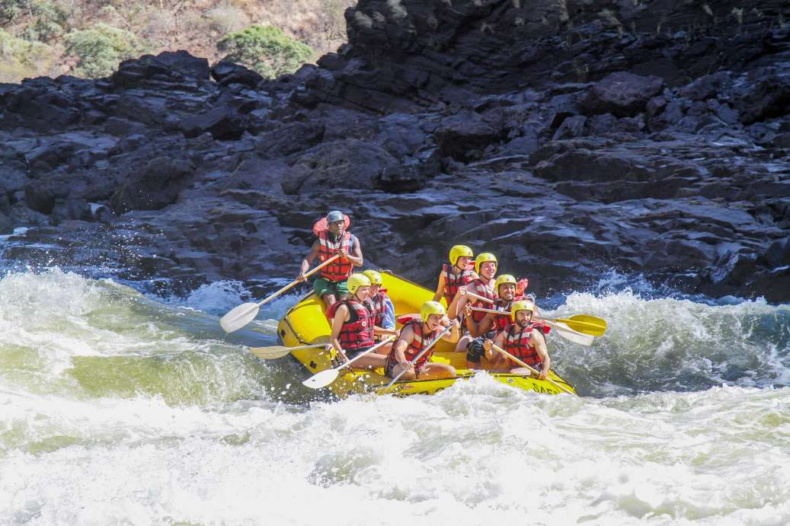
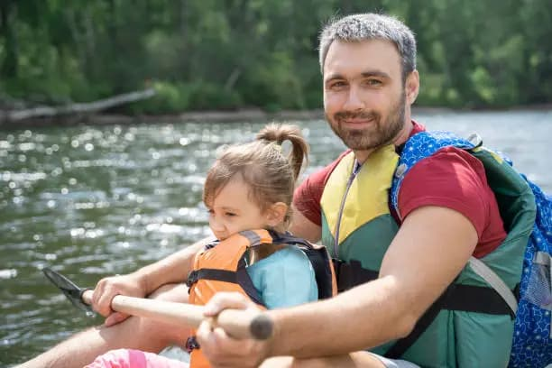

Our purpose is to provide thrilling and safe whitewater rafting experiences for adventurers of all skill levels. We believe in connecting people with nature and creating unforgettable memories on the river. Our mission is to share our passion for rafting and the great outdoors, all while upholding the highest standards of safety and environmental stewardship.


Dry Oar Boating
History
Founded in 1985 by two passionate river guides, Dry Oar Boating began as a small operation with a single raft and a big dream. Over the decades, we've grown into a premier rafting company, but our core values remain the same. We're still a family-run business dedicated to sharing the magic of the river with every person who joins us on a trip.